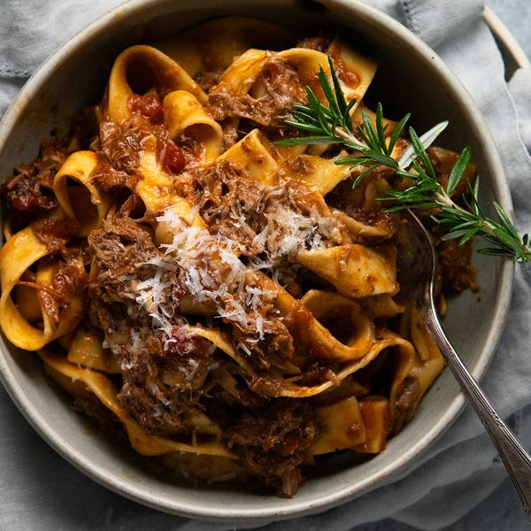

Slow Cooked Rosemary Lamb Ragu
Lamb shoulder slow cooked in a red wine and tomato sauce with rosemary
until it falls apart, then shredded and tossed through pappardelle.
Ingredients
- 1.25 kg boneless lamb shoulder, cut into 3 pieces
- 2 tbsp olive oil
- 1 onion, finely chopped
- 2 celery sticks, grated
- 1 large carrot, grated
- 3 garlic cloves, minced
- 1 tbsp rosemary, finely chopped, plus 5 sprigs
- 2 bay leaves
- 1/4 cup tomato paste
- 1 1/2 cups red wine
- 400 g canned crushed tomato
- 1 1/2 cups chicken stock
- 2 beef stock cubes, crumbled
- 500 g pappardelle
- Parmesan, for serving
Instructions
- Season the lamb with salt and pepper and brown it in olive oil, then set it aside.
- Cook the onion, celery, carrot, garlic and chopped rosemary slowly for 7 - 8 minutes.
- Cook the tomato paste for 1 1/2 minutes, then add the wine and reduce by half.
- Add the tomato, stock, stock cubes, bay leaves, 3 rosemary sprigs and the lamb.
- Cover and simmer gently for 2 hours, until the lamb shreds easily.
- Shred the lamb, return it to the pot and simmer uncovered for 30 minutes.
- Cook the pasta 1 minute short of the packet time and save some pasta water.
- Toss the pasta with the ragu and a splash of pasta water, then serve with parmesan.